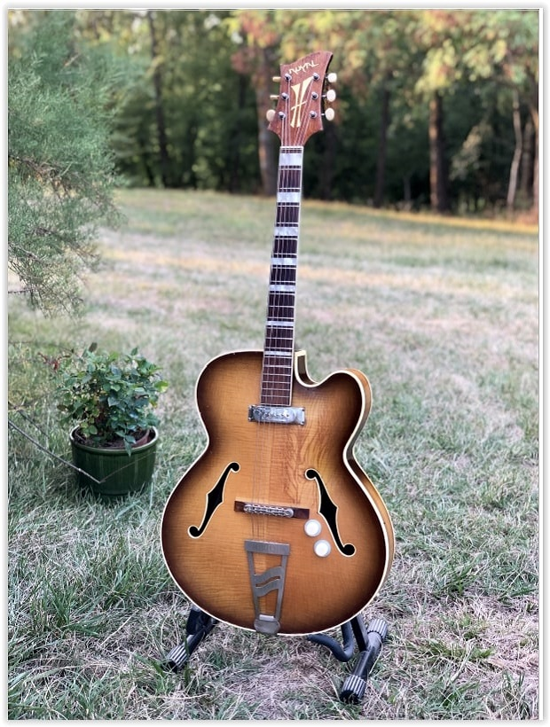
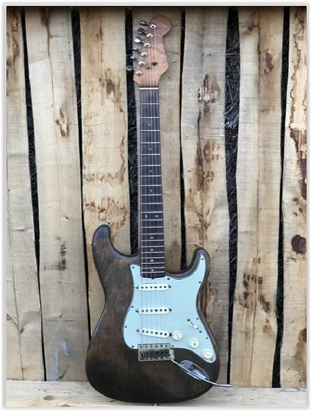
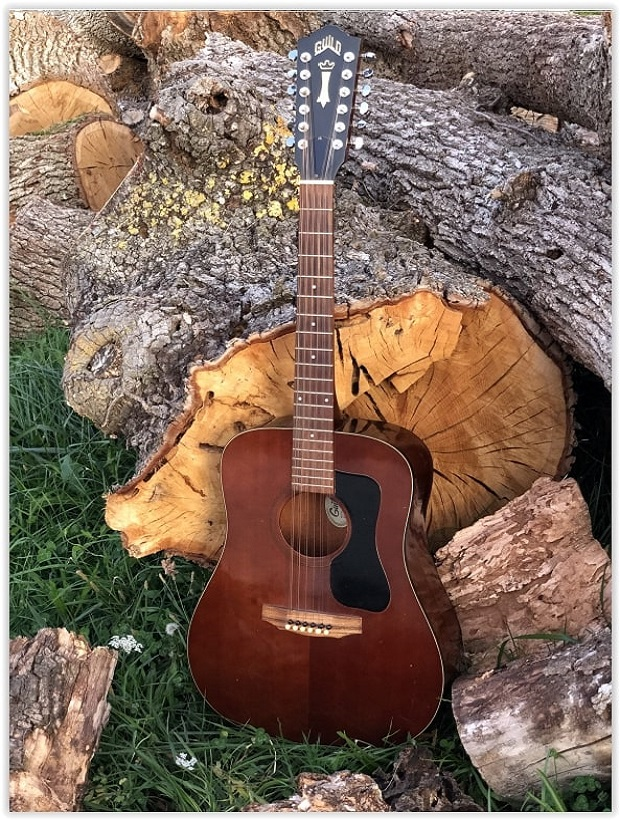
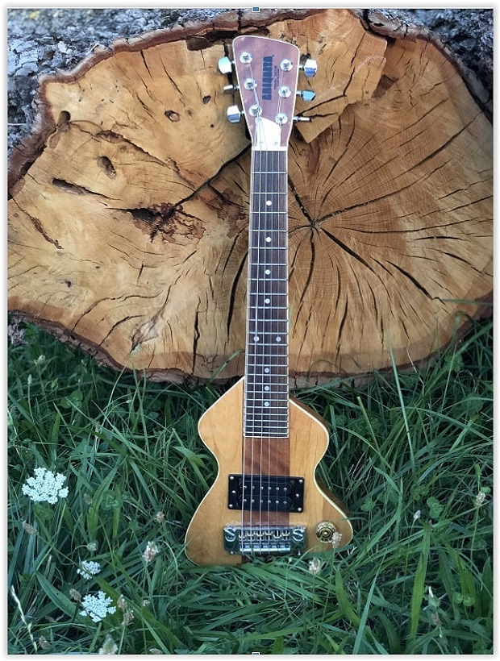

#F0-01
- Gibson ES-350 -
- 1950 –

#F4-01
- Gretsch Duo Jet 6128 –
- 1954 –
#F5-01
-Fender LAP Steel Champ –
- 1955 -
#F6-01
- Gibson Les Paul Junior -
- 1956 –
#F6-02
- Gibson Les Paul Standard –
- 1956 –

#F7-01
- Martin D28 -
- 1957 -
#F8-01
- Gibson ES225 TD -
- 1958 –
#F8-02
- Gibson Les Paul Standard –
- 1958 Sunburst -

#F9-01
- Gretsch 6120 -
- 1959 -
#G0-01
- Epiphone Zephyr -
- 1960 -

#G1-01
- Fender Telecaster -
- 1961 -
#G1-02
- Eko EkoMaster 400 -
– 1961 –
#G2-01
- Rickenbacker 425 -
- 1962 –
#G2-02
- Fender Jazz Bass -
– 1962 –
#G2-03
- Jacobacci Royal -
- 1962 -
#G3-02
- Fender Stratocaster “Pawn” -
- 1963 –
#G3-01
- Gibson SG Standard -
- 1963 –
#G3-02
- Fender Stratocaster “Pawn” -
- 1963 –
#G3-02
- Fender Stratocaster “Pawn” -
- 1963 –

#G3-02
- Fender Stratocaster “Pawn” -
- 1963 –
#G4-01
- Eko 500 V4 -
- 1964 -
#G5-01
- Gibson SG Junior -
– 1965 –
#G5-02
- Hofner – 4575 Verythin –
- 1965 –
#G5-03
- Kingston -
– 1965 –
#G5-04
- Teisco -
– 1965 –
#G6-01
- Fender – Electric XII –
- 1966 -
#G7-01
– Framus Texan – Model 5/296 -
- 1967 -
#G9-01
- Ampeg Dan Amstrong –Lucite -
- 1969 –

#G9-02
- Univox Les Paul
– 1969 –
#G9-03
- National Les Paul
– 1969 –
#H3-01
- Jolana Diamant
– 1973 –
#H3-01
- Jolana Diamant
– 1973 –
#H3-02
- Zemaitis XII -
- 1973 -
#H6-01
- Ural 650 -
- 1976(?) -
#I2-01
– Ibanez V300 -
- 1982 –
#I4-01
- Guild 212 M XII -
- 1984 –
#J4-01
–Dan Erlwine Chiquita Travel Guitar-
- 1994 –
#J4-02 - Fender Marylyn Custom Shop -
– 1994 – Limited Edition #074 of 175 -
- Playboy 40th Anniversary -
#K5-01 - Gibson ES335 “Big Red” –
- 2005 – Nashville Custom Shop –
Limited Edition: #14 of 50 first batch
– Alvin Lee Signature Model -